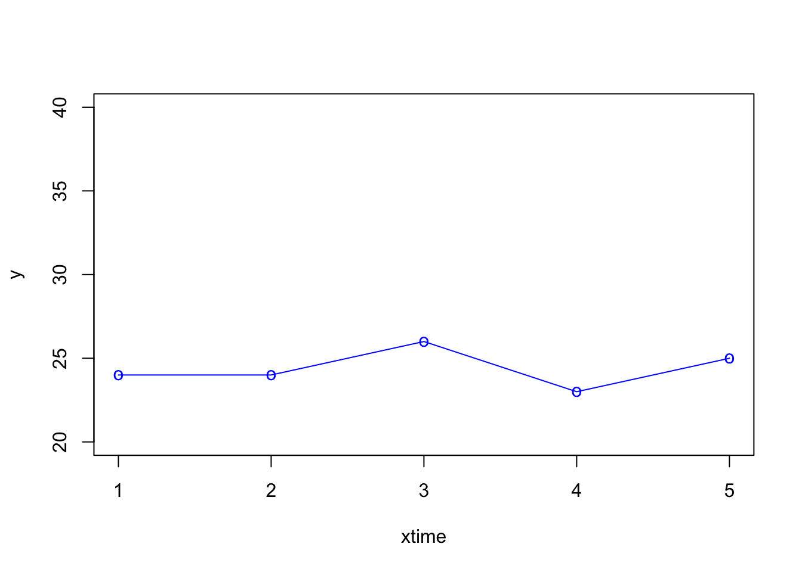
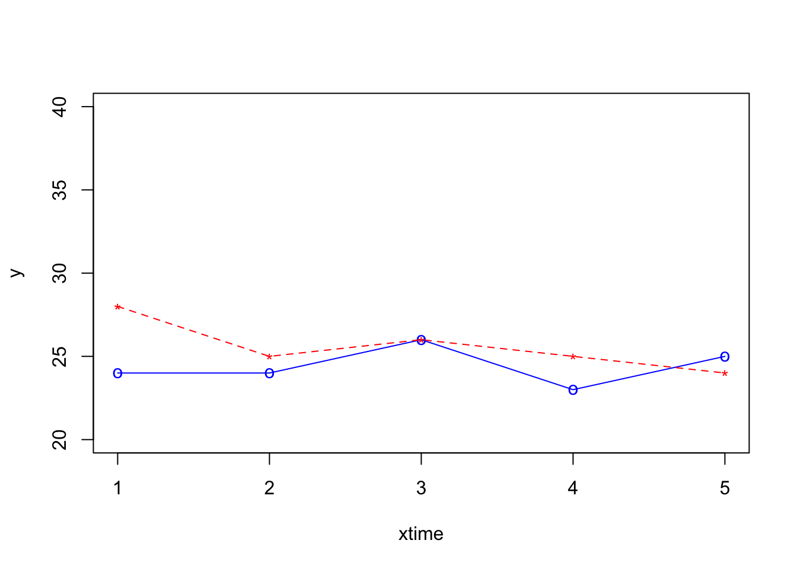
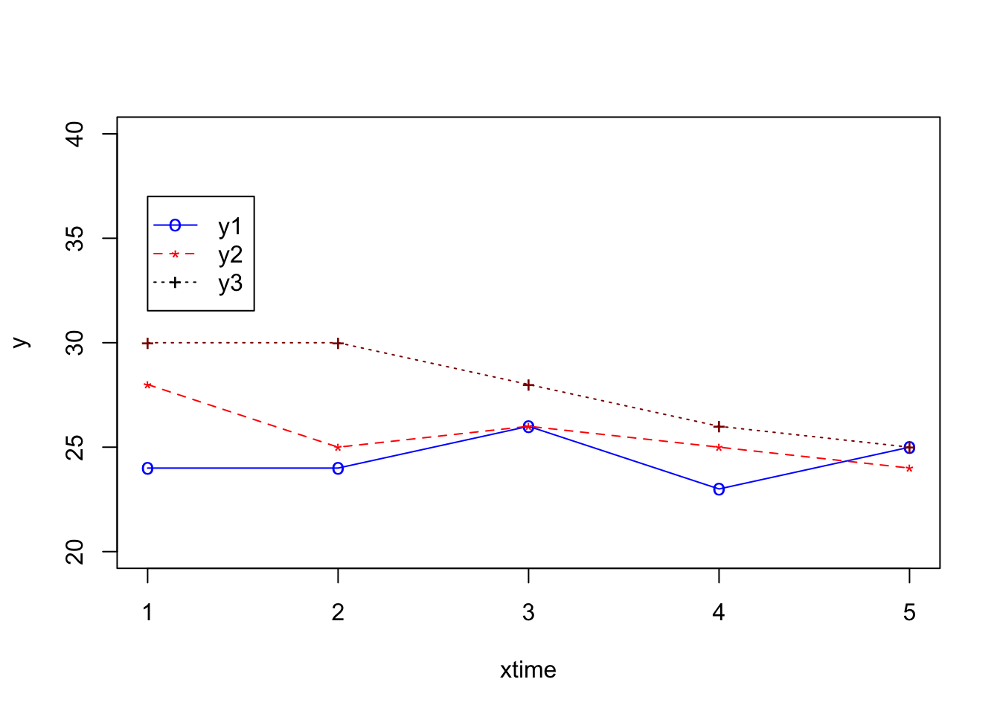

Chapter 5 Simple line graph
5.1 What you will learn
- Topic 1
- Topic 2
5.2 Requirements
- Install R and RStudio^{Alternatively, you can use RStudio Cloud}
To follow along, open RStudio, then create a new R script13. Then, copy and paste each chunk of code into the newly created script.
Finally, run separately each step (chunk of code) to create a simple line graph. We will start with Step 1, then run Step 2 to create the graph shown in Figure 5.1. Notice that this graph does not have the lines (or titles), yet.
5.3 Introduction
R and RStudio are two great tools for creating graphs. Although I think SPSS scores high on the graph creation category, it falls short in many aspects. Arguably, its main shortcoming has to do the lack of flexibility. This is not the case with R and RStudio.
Below, I will show how to create beautiful graphs with R and RStudio.
I will get started with line graphs.
5.4 Simple line graph
To follow along, open RStudio, then create a new R script14. Then, copy and paste each chunk of code into the newly created script.
Finally, run separately each step (chunk of code) to create a simple line graph. We will start with Step 1, then run Step 2 to create the graph shown in Figure 5.1. Notice that this graph does not have the lines (or titles), yet.
Step 1
Step 2
Figure 5.1: Simple graph line without title nor lines
Step 3
# Step 3: Let's add labels for x and y and a title for the plot
plot(x, y, xlab = "x var title", ylab = "y var title", main = "Title")Figure 5.2: Simple graph with titles but no lines
Step 4
# Step 4: Let's draw a line
plot(x, y, xlab = "x var title", ylab = "y var title", main = "Title",
type = "o")
Figure 5.3: Simple graph line with titles and lines
Step 5
# Step 5: Let's change the density and color of the line and dots
plot(x, y, xlab = "x var title", ylab = "y var title", main = "Title",
type = "o", pch = 20, lwd = 2, col = "blue")
Figure 5.4: Simple graph line with titles, different line density, and color
5.5 Multiple lines graph
{{% alert note %}} The R script below was adapted from: http://bit.ly/34fDitr
To accomplish this task, you will need to use three other functions in R: points() and lines() {{% /alert %}}
What you need to know
Three groups were tested 5 times (once every week for a period of 5 weeks) on BMI (body mass index). For a period of five weeks, two groups engaged in a physical fitness program whereas G1 did not exercise at all. Using this information, plot BMI changes over time for the three groups.
Group 1 (G1) = No exercise (control group)
Group 2 (G2) = Traditional fitness program
Group 3 (G3) = New fitness programStep 1
# define 3 data sets
time <- c(1,2,3,4,5) # or simply c(1:5)
y1 <- c(24,24,26,23,25) # Group 1
y2 <- c(28, 25, 26, 25, 24) # Group 2
y3 <- c(30,30, 28, 26, 25) # Group 3Step 2
# plot the first curve by calling plot() function
# First curve is plotted
plot(time, y1, type="o", col="blue", pch="o", lty=1, ylim=c(0,50))
Figure 5.5: Multi line graph - first line
Step 3
# Add second curve to the same plot by calling points() and lines()
# Use symbol '*' for points.
plot(time, y1, type="o", col="blue", pch="o", lty=1, ylim=c(0,50))
points(time, y2, col="red", pch='*')
lines(time, y2, col="red",lty=2)Figure 5.6: Multi line graph - second line added
Step 4
# Add Third curve to the same plot by calling points() and lines()
# Use symbol '+' for points.
plot(time, y1, type="o", col="blue", pch="o", lty=1, ylim=c(0,50))
points(time, y2, col="red", pch='*')
lines(time, y2, col="red",lty=2)
points(time, y3, col="dark red",pch="+")
lines(time, y3, col="dark red", lty=3)Figure 5.7: Multi line graph - third line added
{{% alert note %}}
After running the script above, you will notice an empty space on the top-half of the plot. So, change the following: (1) Change the ylim argument to 20, 35. This will improve the look of the plot. (2) In addition, add labels to y and x and a main title to the plot. Refer to Figure 5.2 for more details.
{{% /alert %}}
Step 5
# Add Third curve to the same plot by calling points() and lines()
# Use symbol '+' for points.
plot(time, y1, xlab = "x var title", ylab = "y var title", main = "Title", type="o", col="blue", pch="o", lty=1, ylim=c(20,35))
points(time, y2, col="red", pch='*')
lines(time, y2, col="red",lty=2)
points(time, y3, col="dark red",pch="+")
lines(time, y3, col="dark red", lty=3)
Figure 5.8: Multi line graph - remove space and add label
5.6 Multiple lines graph (with legends)
Below is the R script to create a plot with multiple lines and a legend. To do this, create a new script, then paste the script below into RStudio and run the script the same way it was done previously.
Step 1
# define 3 data sets
xtime <- c(1,2,3,4,5) # or simply c(1:5)
y1 <- c(24,24,26,23,25) # Group 1
y2 <- c(28,25,26,25,24) # Group 2
y3 <- c(30,30,28,26,25) # Group 3Step 2
# plot the first curve by calling plot() function
# First curve is plotted
plot(xtime, y1, type="o", col="blue", pch="o", lty=1, ylim=c(20,40), ylab="y" )
Step 3
# Add second curve to the same plot by calling points() and lines()
# Use symbol '*' for points.
plot(xtime, y1, type="o", col="blue", pch="o", lty=1, ylim=c(20,40), ylab="y" )
points(xtime, y2, col="red", pch="*")
lines(xtime, y2, col="red",lty=2)
Step 4
# Add Third curve to the same plot by calling points() and lines()
# Use the symbol '+' for points.
plot(xtime, y1, type="o", col="blue", pch="o", lty=1, ylim=c(20,40), ylab="y" )
points(xtime, y2, col="red", pch="*")
lines(xtime, y2, col="red",lty=2)
points(xtime, y3, col="dark red",pch="+")
lines(xtime, y3, col="dark red", lty=3)
Step 5
# Adding a legend inside the box at the location (1,37) in graph coordinates.
# Note that the order of plots are maintained in the vectors of attributes.
plot(xtime, y1, type="o", col="blue", pch="o", lty=1, ylim=c(20,40), ylab="y" )
points(xtime, y2, col="red", pch="*")
lines(xtime, y2, col="red",lty=2)
points(xtime, y3, col="dark red",pch="+")
lines(xtime, y3, col="dark red", lty=3)
legend(1,37,legend=c("y1","y2","y3"), col=c("blue","red","black"),
pch=c("o","*","+"),lty=c(1,2,3), ncol=1)
5.7 SPSS
GGRAPH
/GRAPHDATASET NAME="graphdataset" VARIABLES=x MEAN(y)[name="MEAN_y"] MISSING=LISTWISE
REPORTMISSING=NO
/GRAPHSPEC SOURCE=INLINE.
BEGIN GPL
SOURCE: s=userSource(id("graphdataset"))
DATA: x=col(source(s), name("x"), unit.category())
DATA: MEAN_y=col(source(s), name("MEAN_y"))
GUIDE: axis(dim(1), label("x"))
GUIDE: axis(dim(2), label("Mean y"))
GUIDE: text.title(label("Simple Line Mean of y by x"))
SCALE: linear(dim(2), include(0))
ELEMENT: line(position(x*MEAN_y), missing.wings())
END GPL.